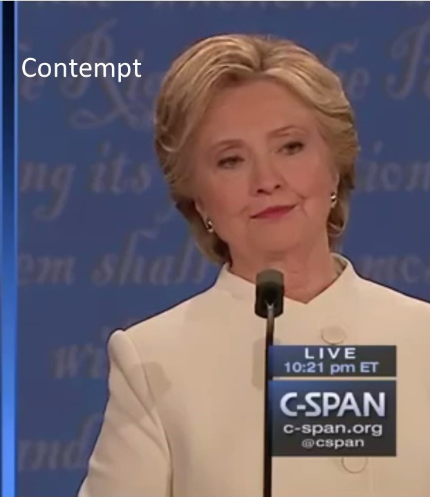
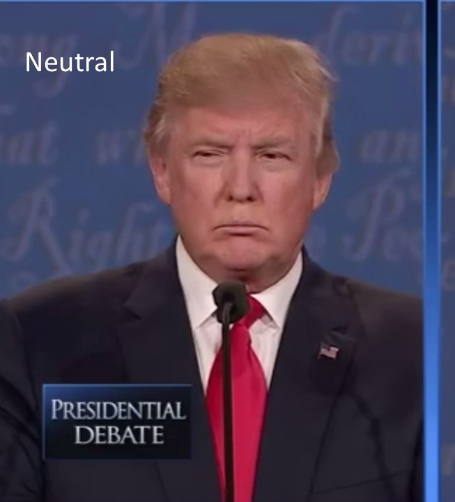
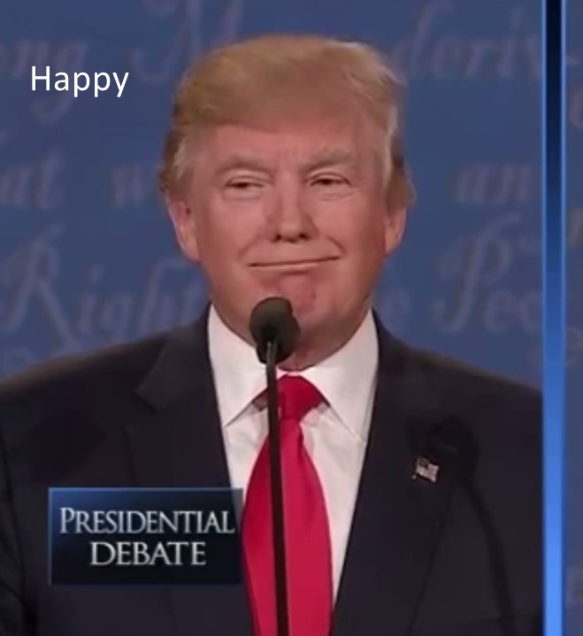
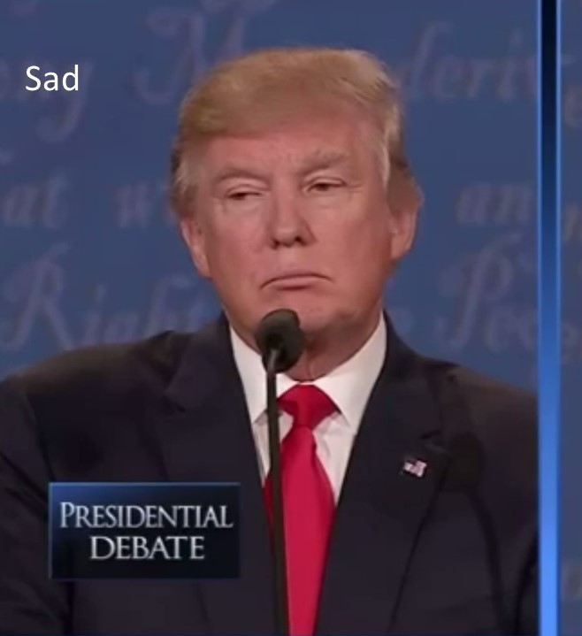
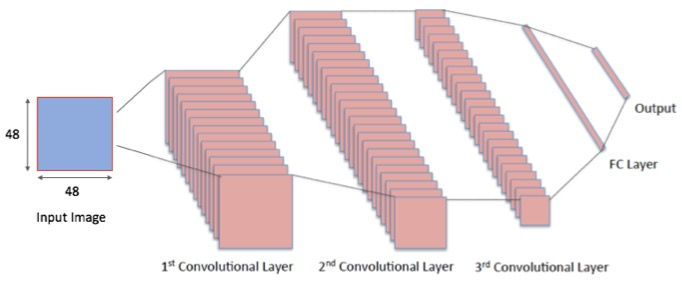
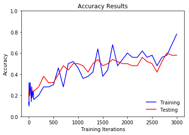
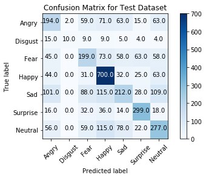
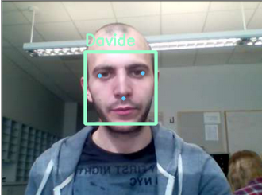
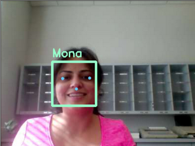

Davide Lucchi
Mona Jalal
Silvia Ionescu
12/3/2017
Given the video of a person classify the emotion that their face is showing in each frame. The algorithm will be applied to the videos of the 2016 presidential debate between Hilary Clinton and Donald Trump where each video shows only one candidate. Our target emotions are neutral, happy, sad, surprise, fear, disgust and anger.
Emotion recognition has many applications like smart home automation, self-driving cars, improving the classroom dynamics based on the students' emotion, and helping people with disabilities based on their emotion.
Hillary Clinton and Donald Trump's Presidential Debate on October 19th, 2016
This dataset is given to us by Professor Margrit Betke's research group.
The video is modified so that the video is cropped in half so that we can see the individual candidates.
| Donald Trump | Hilary Clinton |
The output of the algorithm should be a set of scores of the emotion in the candidate's face. This scores represent the probability that the current espression is associated to that emotion. The scores are recomputed for each set of frames.
 |
 | |
|  |  |  |
Facial expressions are one of the most important non-verbal ways that human beings convey internal emotion. This means that there have been significant efforts to develop reliable automated face expression recognition (FER) systems that can understand human emotion and can interact with humans more naturally. One of the main problems for these systems is the fact that they have to operate in uncontrolled environments where the scene lighting, camera view, image resolution, background, users pose can have significant variations. With the rise of deep learning systems and big data systems, we are now able to have training data in the order of 500k image samples which are precisely annotated using multiple Amazon Mechanical Turk crowd workers for each image. Having large training dataset helps us with being able to shoot for very deep neural networks that can learn new patterns and detect emotions while the conventional computer vision algorithms or shallow neural networks might fail.
There have been a few models developed to quantify facial expressions and behaviors:
Datasets of facial expressions in the wild have received a spacial attention due to the uncontrolled environment setting that FER systems have be applied to.
The Facial Expression Recognition 2013 (FER-2013) datatset was introduced in the ICML 2013 challenge[1]. The database was created using the Google image search API that matched a set of 184 emotion-related keywords to capture the six basic expressions as well as the neutral expression. Images were resized to 48x48 pixels and converted to grayscale. Human labelers were used to reject incorrectly labeled images and filter out some duplicate images. The resulting database contains 35,887 images most of which are in the wild settings. The downside of the FER-2013 dataset is that the faces are not registered, a small number of images portray disgust (547 images), facial landmark detectors fail to extract facial landmarks at this resolution and quality, and only the categorical model of affect is provided with FER-2013. Winner of the FER challenge obtained a 71.2% accuracy on the test set by using CNNs with linear one-vs-all SVM at the top.
The FER-Wild database [2] contains 24,000 images that were obtained by searching emotion-related terms from three search engines. The OpenCV face recognition was used to detect faces in the images, and 66 landmark points were found. Human labelers were used to annotate the images into six basic expressions and neutral. Compared with FER-2013, FER-Wild images have a higher resolution with facial landmark points necessary to register the images. Still the downside of this dataset is that few samples express disgust and fear and only the categorical model of affect is provided with FER-Wild.An accuracy of 80% was obtained for the FER-Wild dataset by training using AlexNet.
AffectNet[3] is a large database containing more than 1M facial images collected from the Internet by querying three major search engines using 1250 emotion related keywords in six different languages. Half of the retrieved images (~440K) were manually annotated for the presence of seven discrete facial expressions (categorial model) and the intensity of valence and arousal (dimensional model).
We started by using the FER-2013 dataset, which consists of 35,887 images that are queried from the web. The data consists of 48x48 pixel grayscale images of faces. The faces have been automatically registered so that the face is more or less centered and occupies about the same amount of space in each image. The task is to categorize each face based on the emotion shown in the facial expression in to one of seven categories (0=Angry, 1=Disgust, 2=Fear, 3=Happy, 4=Sad, 5=Surprise, 6=Neutral). The training set consists of 28,709 examples and test set has a size of 3,589 examples.
For a first test, a 3 layer convolution neural network was build using Tensorflow as shown below.
|  |
|
|
The 28,709 training examples in the FER-2013 dataset were used to train the convolution neural network and from a preliminary setup a 58% accuracy was obtained for the 3,589 test set examples after 3000 iterations. The results for our preliminary cnn are shown below.
|  |  |
The test accuracy could possible be improved by optimizing the convolutional neural network's hyperparameters. We are also planning to implement and test different CNNs architectures such as AlexNet, VGG16, and if time allows ResNet (starting with ResNet50 and extending it it to ResNet152).
We are using a machine with two Nvidia 1080Ti GPUs and Intel Core i7 CPUs with 4TB of HDD and 1TB of SSD and 64GB of RAM. For the software pack, we are using pure tensorflow Python API as well as Keras API in Python with tensorflow backend. We also will use the Nvidia Tesla P100 and Nvidia Tesla k40 GPUs from SCC cluster that is reserved for the course after finalizing our code. Additionally, we are currently experimenting with OpenFace [8] for face detection and face landmark detection. The image below shows OpenFace demo running in Docker. We also have it in our plan to use the facial action unit (AUs) that reflects the facial muscle movements which is very important in emotion recognition. AUs aim to provide features that are complementary to CNN features [7]. We additionally, plan to add to experiment with LSTM-based RNNs for emotion recognition because the nature of emotion video segment is a temporal sequence.
|  |  |
A second approach involved using a SVM fed with Action Units (AU). The Action Units were extracted with OpenFace from the datasets FER2013 and Karolinska Directed Emotional Faces (KDEF). The KDEF dataset consists of 4900 pictures of 70 individuals each displaying 7 different emotional expressions. Each expressions is photographed from 5 different angles. The fact that the debate images have high resolution and that the candidates are for most of the time facing the camera under good lighting conditions suggest that a wild dataset is probably not needed to obtain a good emotion prediction accuracy and so a simpler dataset like KDEF could be enough. The AU output of OpenFace consists of a set of occurences and intensities one for each of the AU that OpenFace is able to recognize. These AUs are shown below with a brief description. For some images given the position of the face of the person it was not possible to calculate the AUs. This happened usually on side pictures where OpenFace was not able to recognize the face. This reduced even more the size of the dataset which in the end was 3022 images. Therefore for each dataset image the AUs were computed and the intensities and occurences values were put in a vector. The SVM training data consisted of a matrix with such vectors. The SVM used is a Support Vector Classification (SVC) sklearn with a rbf kernel and ovr decision function. The training and validation data were generated with the function train_test_split in order to have a random sample.
| Action Unit | Description | Facial Muscle | Example (Hover to Play) |
| 1 | Inner Brow Raiser | Frontalis, pars medialis |  |
| 2 | Outer Brow Raiser (unilateral, right side) | Frontalis, pars lateralis |  |
| 4 | Brow Lowerer | Depressor Glabellae, Depressor Supercilli, Currugator |  |
| 5 | Upper Lid Raiser | Levator palpebrae superioris |  |
| 6 | Cheek Raiser | Orbicularis oculi, pars orbitalis |  |
| 7 | Lid Tightener | Orbicularis oculi, pars palpebralis |  |
| 9 (also shows slight AU4 and AU10) | Nose Wrinkler | Levator labii superioris alaquae nasi |  |
| 10 (also shows slight AU25) | Upper Lip Raiser | Levator Labii Superioris, Caput infraorbitalis |  |
| 12 | Lip Corner Puller | Zygomatic Major |  |
| 14 | Dimpler | Buccinator |  |
| 15 | Lip Corner Depressor | Depressor anguli oris (Triangularis) |  |
| 17 | Chin Raiser | Mentalis |  |
| 20 | Lip stretcher | Risorius |  |
| 23 | Lip Tightener | Orbicularis oris |  |
| 25 | Lips part | Depressor Labii, Relaxation of Mentalis (AU17), Orbicularis Oris |  |
| 26 | Jaw Drop | Masetter; Temporal and Internal Pterygoid relaxed |  |
| 28 | Lip Suck | Orbicularis oris |  |
| 45 | Blink | Relaxation of Levator Palpebrae and Contraction of Orbicularis Oculi, Pars Palpebralis. |  |
| Emotion | Action Units | Description | Examples (Hover to Play) |
| Happiness / Joy | 6 + 12 | Cheek Raiser, Lip Corner Puller |
|
| Sadness | 1 + 4 + 15 | Inner Brow Raiser, Brow Lowerer, Lip Corner Depressor | 
|
| Surprise | 1 + 2 + 5 + 26 | Inner Brow Raiser, Outer Brow Raiser, Upper Lid Raiser, Jaw Drop |
|
| Fear | 1 + 2 + 4 + 5 + 7 + 20 + 26 | Inner Brow Raiser, Outer Brow Raiser, Brow Lowerer, Upper Lid Raiser, Lid Tightener, Lip Stretcher, Jaw Drop |
|
| Anger | 4 + 5 + 7 + 23 | Brow Lowerer, Upper Lid Raiser, Lid Tightener, Lip Tightener |
|
| Disgust | 9 + 15 + 16 | Nose Wrinkler, Lip Corner Depressor, Lower Lip Depressor | 
|
| Contempt | 12 + 14 (on one side of the face) | Lip Corner Puller, Dimpler | 
|